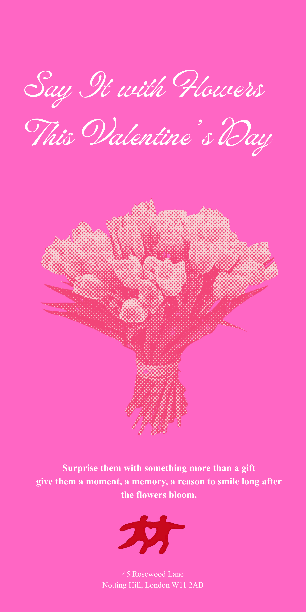
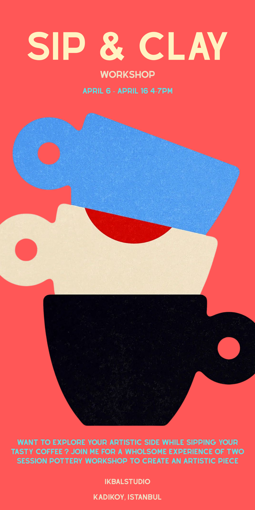
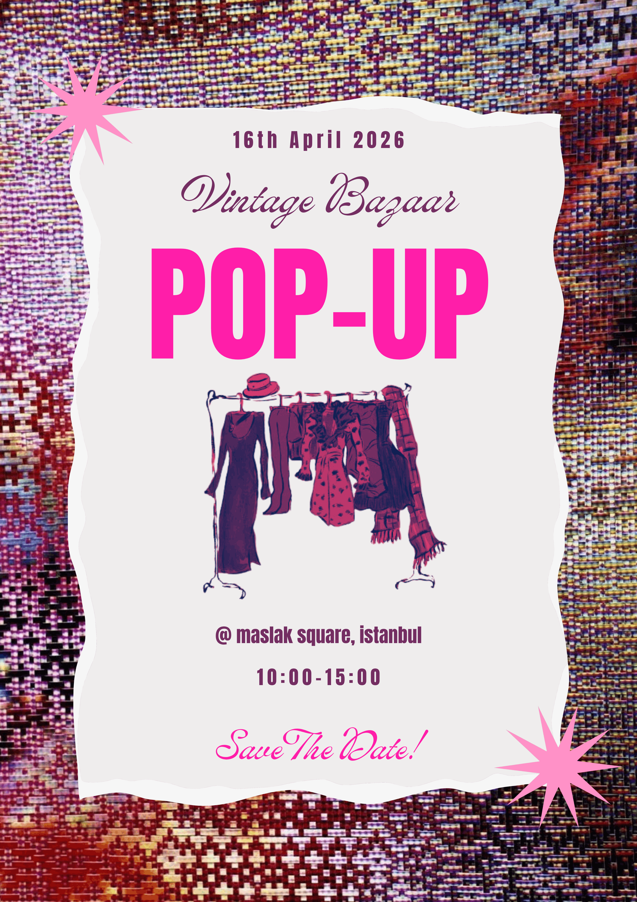
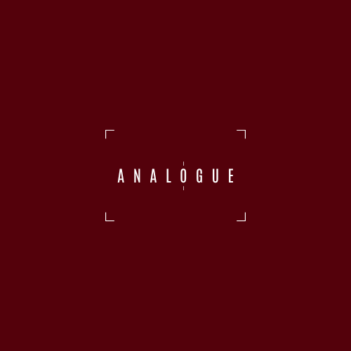
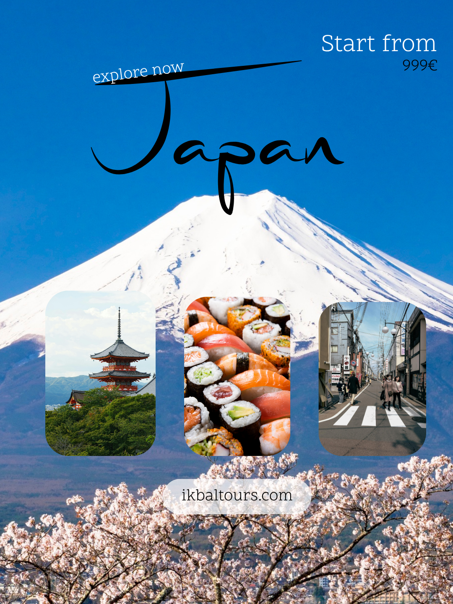
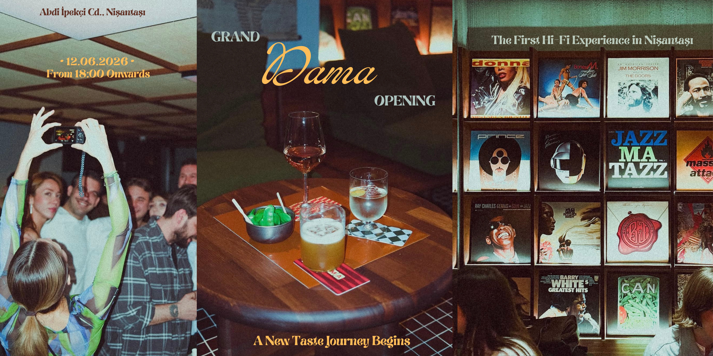
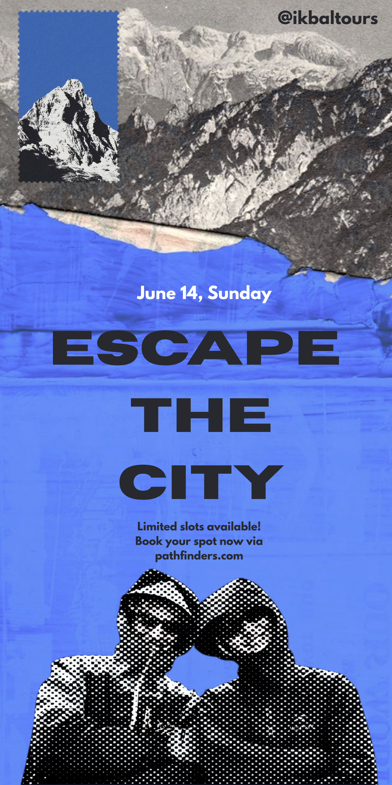
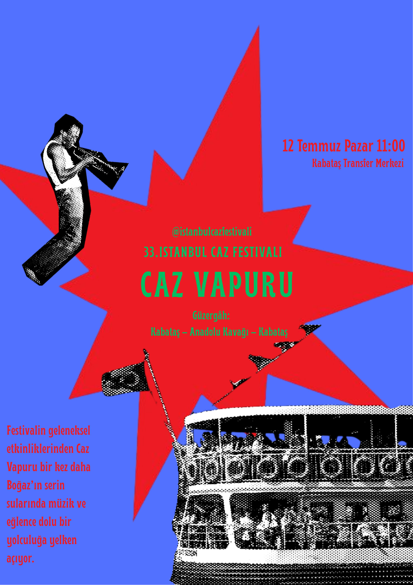
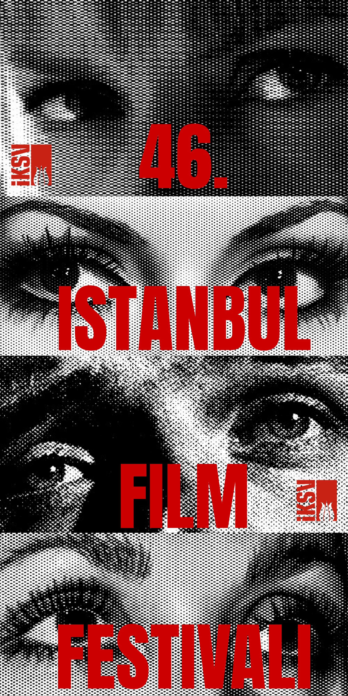
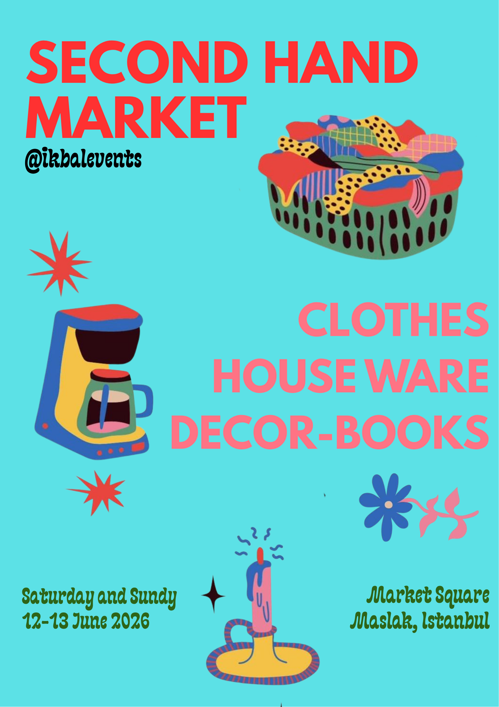

View Concept{kind=link}
Valentine's Day Campaign
A promotional poster design ('Say It with Flowers') focusing on elegant typography and halftone visual effects.
HELLO, I'M
A first-year New Media and Communication student with a passion for visual storytelling and digital design. I love exploring how typography, color, and composition can communicate powerful messages. Welcome to my digital space.

View ConceptA promotional poster design ('Say It with Flowers') focusing on elegant typography and halftone visual effects.

View ConceptA vibrant, minimalist poster design for a pottery and coffee event, utilizing bold shapes and a warm color palette.

View ConceptAn eclectic event poster combining textured backgrounds with striking pink typography for a fashion pop-up.

View ConceptA clean, minimalist logo/branding concept exploring spacing and framing techniques.

View ConceptA visual journey capturing the harmony of traditional heritage and futuristic minimalism.

View ConceptVisual identity and launch campaign design for Nişantaşı’s first-ever Hi-Fi concept cafe. The project blends premium coffee culture with high-fidelity analog sound aesthetics, reflected through sophisticated typography and minimalist luxury.

View ConceptSocial media and promotional banner concept designed for an adventure and hiking community. The project aims to capture the essence of freedom and exploration through clean layouts and powerful nature imagery.

View ConceptSail away to the smooth rhythms of live music. A night where the city lights, the cool breeze, and the blues come together.

View ConceptA conceptual poster design created for the 46th Istanbul Film Festival. Inspired by vintage print media and cinematic gaze, the layout uses high-contrast halftone imagery split into vertical close-ups, layered with bold, iconic red typography to capture the dramatic essence of the festival.

View ConceptGiving pre-loved treasures a second chance. A vibrant marketplace identity designed for the conscious curation of vintage finds, decor, and stories.
{kind=link}
{kind=link}
{kind=link}
{kind=link}
{kind=link}
{kind=link}
{kind=link}
{kind=link}
{kind=link}